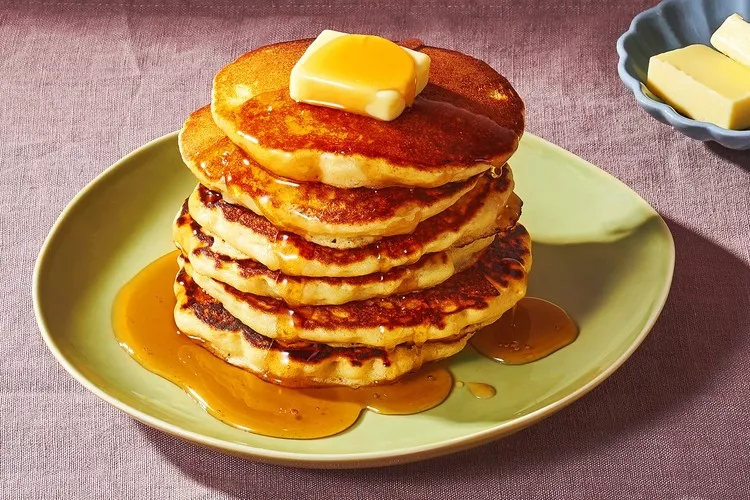

home pancake recipe

how to perpare pancake
How to Make Fluffy Homemade Pancakes Every Time
Use fresh ingredients.- Check your flour and baking powder to make sure they haven't expired or gone rancid.
Don't over-stir. - When combining your wet and dry ingredients, stir only until you no longer see any dry spots of flour.
- Over-stirring will make pancakes tougher (since gluten develops in the flour) and less fluffy (which happens when leaveners release bubbles).
- Let batter rest.
- Resting about 10 minutes allows the leaveners to continue to work their magic, creating and expanding into thousands of tiny pockets of carbon dioxide.
The fluffier the batter, the fluffier the pancakes.
Start with a hot surface. Allow your skillet or griddle to fully heat up before you add batter.
Make a test pancake. This is your practice run to gauge and adjust the temperature and cook time. Peek frequently at the underside to - check if the pancake is browning at the right pace.
Don't press the pancakes. It's tempting to press down on the pancakes with a spatula after flipping, but this will result in a dense, gummy pancake.
back